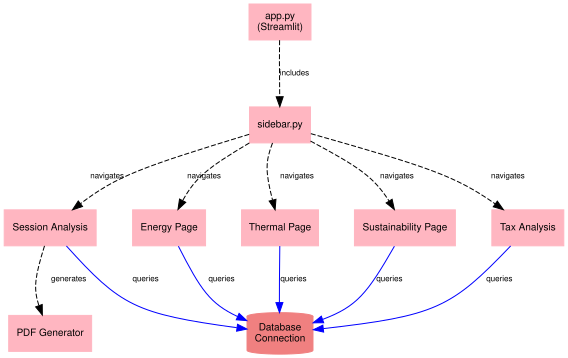

GUI Design¶
This document describes the architecture and design of the A-LEMS web-based GUI built with Streamlit.
🖥️ GUI Overview¶
The A-LEMS GUI provides an interactive dashboard for: - Experiment Management - Run and monitor experiments - Data Visualization - Charts for energy, thermal, tax analysis - Report Generation - PDF exports of experiment results - Database Exploration - Raw data queries and exploration

🏗️ Architecture¶
Main Entry Point¶
streamlit_app.py- Main application entry point
Core Modules¶
| File | Purpose |
|---|---|
gui/config.py |
Shared configuration and theme settings |
gui/db.py |
Database connection management |
gui/helpers.py |
Utility functions for charts and formatting |
Pages (30+)¶
The gui/pages/ directory contains all individual pages, organized by category:
| Page | Category | Description |
|---|---|---|
overview.py |
Core | System overview dashboard |
experiments.py |
Core | Experiment management |
execute.py |
Core | Run new experiments |
tax.py |
Analysis | Orchestration tax analysis |
sustainability.py |
Analysis | Carbon/water/methane metrics |
thermal.py |
Analysis | Temperature analysis |
explorer.py |
Data | Raw data exploration |
sql_query.py |
Data | Custom SQL queries |
session_analysis.py |
Reports | PDF report generation |
silicon_journey.py |
Research | Special visualization |
dq_coverage.py |
Quality | Data quality checks |
research_insights.py |
Research | Research findings |
Page Categories¶
| Category | Count | Purpose |
|---|---|---|
| Core Pages | 5 | Main experiment workflow |
| Analysis Pages | 8 | Result analysis and visualization |
| Data Pages | 6 | Data exploration and querying |
| Quality Pages | 4 | Data quality monitoring |
| Research Pages | 3 | Research tools and insights |
| Reports | 2 | PDF and report generation |
🧭 Page Navigation¶
The sidebar organizes pages into logical categories:
Experiment Control¶
| Page | Icon | Description |
|---|---|---|
| Execute Run | ▶ |
Run new experiments |
| Experiment Designer | 🧪 |
Design custom experiment templates |
| Experiments | ≡ |
View and manage past experiments |
| Settings | ⚙ |
System configuration |
Exploration¶
| Page | Icon | Description |
|---|---|---|
| Run Explorer | ⊞ |
Explore individual run data |
| Sessions | ⬡ |
Browse experiment sessions |
Energy & Compute¶
| Page | Icon | Description |
|---|---|---|
| Energy | ⚡ |
Energy consumption analysis |
| Domains | ◉ |
RAPL domain breakdown |
| Sustainability | ♻ |
Carbon, water, methane metrics |
Orchestration¶
| Page | Icon | Description |
|---|---|---|
| Tax Attribution | ▲ |
Orchestration tax analysis |
| Agentic vs Linear | ⇌ |
Compare workflow types |
| Query Analysis | ◑ |
LLM query performance |
System Behavior¶
| Page | Icon | Description |
|---|---|---|
| CPU & C-States | ▣ |
CPU frequency and C-state analysis |
| Scheduler | 〜 |
Context switch and interrupt analysis |
| Anomalies | ⚠ |
Anomaly detection |
Overview¶
| Page | Icon | Description |
|---|---|---|
| Overview | ◈ |
Main dashboard with key metrics |
🧩 Core Components¶
1. config.py¶
Central configuration for the GUI:
# Paths
PROJECT_ROOT = Path(__file__).parent.parent
DB_PATH = PROJECT_ROOT / "data" / "experiments.db"
# Plotly theme
PL = dict(
paper_bgcolor="#0f1520",
plot_bgcolor="#090d13",
font=dict(color="#7090b0"),
colorway=["#22c55e", "#ef4444", "#3b82f6"]
)
# Workflow colors
WF_COLORS = {"linear": "#22c55e", "agentic": "#ef4444"}
# Status colors
STATUS_COLORS = {
"completed": "#3b82f6",
"running": "#22c55e",
"pending": "#f59e0b",
"failed": "#ef4444"
}
2. db.py¶
Database interface layer:
def q(query: str) -> pd.DataFrame:
"""Execute query and return DataFrame."""
conn = sqlite3.connect(DB_PATH)
df = pd.read_sql_query(query, conn)
conn.close()
return df
def q1(query: str) -> Any:
"""Execute query returning single value."""
conn = sqlite3.connect(DB_PATH)
cursor = conn.execute(query)
result = cursor.fetchone()
conn.close()
return result[0] if result else None
3. helpers.py¶
Utility functions for data formatting:
def _human_energy(joules: float) -> str:
"""Convert joules to human-readable format."""
if joules > 20000:
return f"{joules/20000:.1f} phone charges"
elif joules > 0.3:
return f"{joules/0.3:.1f} Google searches"
else:
return f"{joules/0.014:.1f} WhatsApp messages"
📄 Page Descriptions¶
overview.py - Dashboard Home¶
- System status summary
- Recent experiment cards
- Quick stats (total runs, energy saved, carbon avoided)
- Links to key pages
execute.py - Run Experiments¶
Input Parameters¶
| Field | Options | Description |
|---|---|---|
| Task | gsm8k_basic (default) |
Select from 16+ predefined tasks |
gsm8k_multi_step |
Multi-step arithmetic | |
logical_reasoning |
Logical deduction | |
factual_qa |
Factual questions | |
| (and 12 more) | ||
| Provider | ● local / ○ cloud |
Local TinyLlama or cloud (Groq/OpenRouter) |
| Repetitions | 3 (configurable) |
Number of runs for statistical significance |
| Optimizer | [ ] Enable |
Optional runtime optimization |
Controls¶
🚀 RUN EXPERIMENT- Start the experiment with selected parameters
Live Progress Display¶
During execution, you'll see:
Real-time Results¶
After each pair of runs, the interface updates:
| Metric | Value |
|---|---|
| Linear Energy | 1.2 J |
| Agentic Energy | 2.6 J |
| Orchestration Tax | 2.2x |
Complete Workflow¶
- Select task and provider
- Set number of repetitions
- (Optional) Enable optimizer
- Click RUN EXPERIMENT
- Watch live progress
- View cumulative statistics after completion
experiments.py - Experiment Browser¶
- Filterable table of all experiments
- Search by task, provider, date
- Quick actions (view, compare, export)
- Summary statistics
tax.py - Orchestration Tax Analysis¶
Tax Multiplier Chart¶
The chart shows tax multiplier (agentic energy / linear energy) across repetitions.
Note: In the actual GUI, this is an interactive Plotly chart
Statistical Summary¶
| Metric | Value | 95% Confidence Interval |
|---|---|---|
| Mean Tax | 12.5x | [10.2x, 14.8x] |
| Median Tax | 11.8x | - |
| Std Deviation | 2.3x | - |
| Min/Max | 6.2x / 18.9x | - |
Interpretation¶
- Tax > 1.0 indicates agentic workflow consumes more energy
- Higher tax suggests more orchestration overhead
- Confidence intervals show statistical significance
Key Insights¶
| Task Type | Typical Tax | Interpretation |
|---|---|---|
| Simple arithmetic | 2-5x | Low orchestration overhead |
| Multi-step logic | 5-15x | Moderate overhead |
| Complex reasoning | 10-30x | High orchestration cost |
Orchestration Overhead Index (OOI)¶
This represents the fraction of total agentic compute consumed by orchestration overhead.
sustainability.py - Environmental Impact¶
- Carbon footprint by experiment
- Water usage metrics
- Methane emissions
- Comparison to everyday activities
- Country-specific grid intensity
explorer.py - Raw Data Explorer¶
- SQL query editor with syntax highlighting
- Results table with export
- Query history
- Schema browser
🔄 Data Flow¶
The GUI follows a simple client-server architecture:
Request Flow¶
Component Responsibilities¶
| Component | Function |
|---|---|
| Browser | User interface, renders HTML/JavaScript |
| Streamlit Server | Handles HTTP requests, session state |
| Pages | Individual page logic and UI components |
| db.py | Database connection and query helpers |
| SQLite DB | Persistent data storage |
Detailed Flow¶
- Browser sends HTTP request to Streamlit server
- Streamlit server routes to appropriate page
- Page executes logic and may query data via
db.py - db.py executes SQL queries against SQLite database
- Results flow back through the chain to the browser
- Browser renders the updated UI
Key Characteristics¶
- Stateless HTTP - Each request is independent
- Server-side rendering - Pages generate HTML on server
- Connection pooling -
db.pymanages database connections - Session state - Preserves user data between requests
🎨 Styling & Theme¶
Dark Theme¶
/* Applied globally */
background-color: #0f1520
text-color: #7090b0
accent-green: #22c55e
accent-red: #ef4444
accent-blue: #3b82f6
Chart Theme (Plotly)¶
PL = {
'paper_bgcolor': '#0f1520',
'plot_bgcolor': '#090d13',
'font': {'color': '#7090b0'},
'colorway': ['#22c55e', '#ef4444', '#3b82f6', '#f59e0b']
}
📊 Key Visualizations¶
Energy Comparison Chart¶
fig = px.bar(
df,
x='run_number',
y=['linear_energy_j', 'agentic_energy_j'],
barmode='group',
title='Linear vs Agentic Energy',
color_discrete_map={
'linear_energy_j': '#22c55e',
'agentic_energy_j': '#ef4444'
}
)
Tax Distribution¶
fig = px.histogram(
df,
x='tax_percent',
nbins=20,
title='Orchestration Tax Distribution',
color_discrete_sequence=['#3b82f6']
)
Thermal Profile¶
🔧 Adding a New Page¶
Step 1: Create Page File¶
# gui/pages/new_page.py
import streamlit as st
def render():
st.title("New Page")
st.write("Content goes here")
Step 2: Add to Navigation¶
In streamlit_app.py, update NAV_GROUPS:
NAV_GROUPS = [
("◈ Overview", "overview"),
("NEW PAGE", "new_page"), # ← Add this
# ... existing entries
]
Step 3: Import in Main¶
📱 Responsive Design¶
The GUI adapts to different screen sizes:
| Device | Layout | Features |
|---|---|---|
| Desktop | Full sidebar + main | All features |
| Tablet | Collapsible sidebar | Core features |
| Mobile | Hamburger menu | Essential views |
🔒 Security Considerations¶
- No authentication - Designed for local/trusted networks only
- CORS warnings - Can be ignored (see Quick Start guide)
- Database - SQLite file permissions must be set
- External access - Use
--server.addressto bind to specific interfaces
🚀 Performance Optimizations¶
- Query caching - Repeated queries use cached results
- Lazy loading - Pages load on demand
- Data sampling - Large datasets are sampled for display
- Connection pooling - Database connections are reused
📈 Usage Analytics¶
The GUI tracks (locally only):
- Page views
- Query execution time
- PDF generation count
- Error rates
No data is sent externally - all metrics stay in local logs.
🐛 Debugging¶
Enable Debug Mode¶
Common Issues¶
| Issue | Solution |
|---|---|
| Page not found | Check _PAGES dictionary in main |
| Chart empty | Verify data in database |
| Slow loading | Add indices to database |
| CORS warnings | Safe to ignore |
This GUI design document corresponds to the diagram at ../assets/diagrams/gui-architecture.svg.